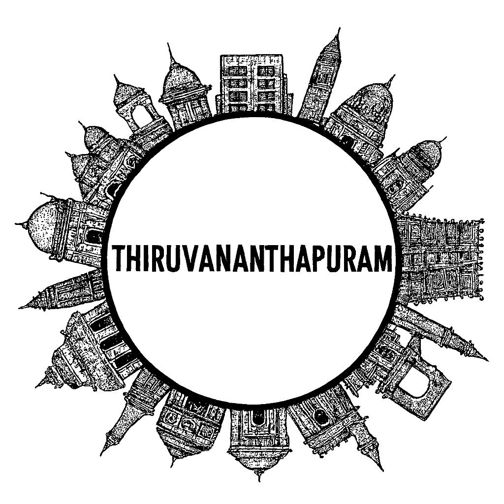

Thiruvananthapuram
Thiruvananthapuram, the capital of Kerala, is a coastal city blending heritage, spirituality, and modern vibrancy. Known for its serene beaches, ancient temples, and colonial architecture, the city is home to the famous Padmanabhaswamy Temple, one of the richest and most revered shrines in India. Kovalam and Varkala beaches attract travelers with their golden sands and calm waters, while Napier Museum and Kanakakkunnu Palace showcase cultural heritage. The city also serves as a gateway to Kerala’s backwaters and hill stations, making it a unique destination of tradition, nature, and modernity.
Thiruvananthapuram, the capital city of Kerala, is a harmonious blend of tradition, spirituality, and modernity. Nestled along the Arabian Sea and surrounded by lush greenery, it is renowned for the iconic Padmanabhaswamy Temple, one of the richest and most revered shrines in the world. The city also boasts colonial-era architecture, vibrant cultural institutions, and serene beaches like Kovalam and Varkala. As a hub of education, technology, and governance, Thiruvananthapuram balances its historic charm with contemporary progress. With its mix of sacred heritage, coastal beauty, and intellectual vibrancy, the city stands as a gateway to Kerala’s timeless spirit and modern aspirations.
Peaceful Nature Spots
Historical Places
Local Markets
Famous Festivals
Famous Local Food Items
More Details
Gallery